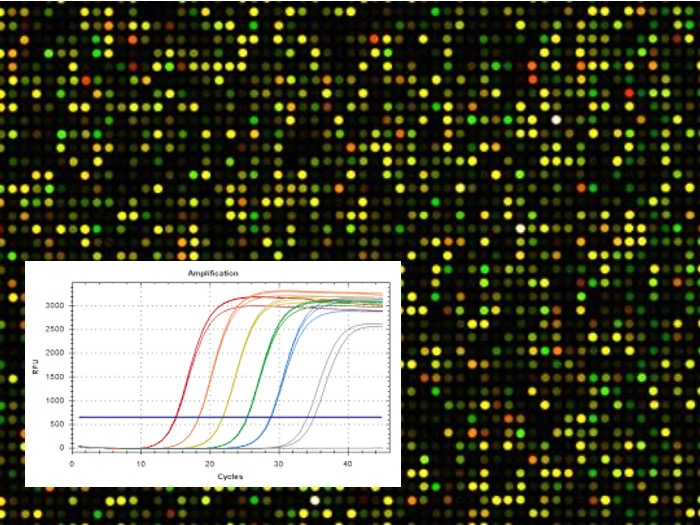
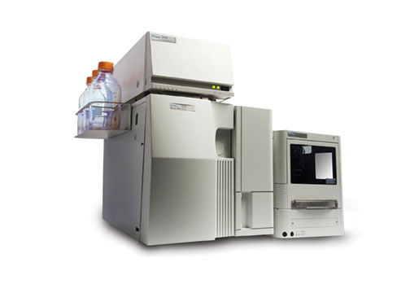

Postgraduate Educational Programming
Research Techniques
 HemodynamicIn animal models, blood pressure can be recorded under anesthesia and analgesia in the iliac artery and aorta to measure systolic and diastolic blood pressure and heart rate. These parameters allow calculating pulse wave velocity to estimate arterial elasticity.
HemodynamicIn animal models, blood pressure can be recorded under anesthesia and analgesia in the iliac artery and aorta to measure systolic and diastolic blood pressure and heart rate. These parameters allow calculating pulse wave velocity to estimate arterial elasticity. ElectrocardiographyIn animal models under anesthesia, the ECG and intraventricular pressure can also recorded.
ElectrocardiographyIn animal models under anesthesia, the ECG and intraventricular pressure can also recorded. EchocardiographyTransthoracic echocardiography can be performed under anesthesia, using an echocardiographic system (Acuson Sequoia C512) equipped with a 13-MHz transducer. This allows measuring left ventricular mass end-diastolic internal diameter, posterior wall thickness at diastole, and septal wall thickness at diastole.
EchocardiographyTransthoracic echocardiography can be performed under anesthesia, using an echocardiographic system (Acuson Sequoia C512) equipped with a 13-MHz transducer. This allows measuring left ventricular mass end-diastolic internal diameter, posterior wall thickness at diastole, and septal wall thickness at diastole. Vascular isometric tensionIn an organ bath under physiological conditions a large vessel can be mounted to record isometric tension in the presence of vasoactive drugs. The influence of perivascular fat, adventitia and endothelium can be assessed by using intact or denuded vessels.
Vascular isometric tensionIn an organ bath under physiological conditions a large vessel can be mounted to record isometric tension in the presence of vasoactive drugs. The influence of perivascular fat, adventitia and endothelium can be assessed by using intact or denuded vessels. Pressure myographySmall vessels set between two glass cannulae under physiological conditions, and visualized with a video-dimension analyzer. It is possible to measure internal and external diameter and the change in the presence of vasoactivo drugs.
Pressure myographySmall vessels set between two glass cannulae under physiological conditions, and visualized with a video-dimension analyzer. It is possible to measure internal and external diameter and the change in the presence of vasoactivo drugs. Wire myographyVessels of small diameter are mounted between wires under physiological conditions. They are exposed to vasoactivo drugs to study vascular contraction and relaxation.
Wire myographyVessels of small diameter are mounted between wires under physiological conditions. They are exposed to vasoactivo drugs to study vascular contraction and relaxation. Laser Scanning Confocal Microscopy (LSCM)We have combined LSCM with pressure myography and image analysis, which we named “confocal myography”, to gain insight in the study of vascular structure in 3D.
Laser Scanning Confocal Microscopy (LSCM)We have combined LSCM with pressure myography and image analysis, which we named “confocal myography”, to gain insight in the study of vascular structure in 3D. Spectroscopic and FluorimetricThese techniques can be used to assess parameters related to reactive oxygen species production, destruction total antioxidant capacity or oxidative damage.
Spectroscopic and FluorimetricThese techniques can be used to assess parameters related to reactive oxygen species production, destruction total antioxidant capacity or oxidative damage. Molecular biology: WBs & ELISAsHighly sensitive techniques that allow the detection of specific proteins in biological samples. They report the quantification of these molecules.
Molecular biology: WBs & ELISAsHighly sensitive techniques that allow the detection of specific proteins in biological samples. They report the quantification of these molecules.- GenomicMolecular genetic techniques, such as qRT-PCR, that allow to see the up/under-expression of genes in biological samples conditioned to treatments.
- High Performance Liquid Chromatography (HPLC)Liquid chromatography (HPLC) is a technique used to separate the components of a mixture. It consists of a non-polar stationary phase (column) and a mobile phase.
- Food compounds physiology digestion
Researchers trained in our group
- Dra. Parichat Prachaney4 months in Specialty programCurrently: Professor of Physiology, Khon Kaen University (Thailand)
- Dra. Perla Y. Gutierrez Arzapalo4 years in PhD programCurrently: Assosiate Professor in the Research Center in Health Sciences, Universidad Autónoma de Sinaloa (Sinaloa, Mexico)
- Dra. Sophida Puthong1 year in Specialty programCurrently: Associate Professor of Physiology, Khon Kaen University (Thailand)
- Romain Sauvestre8 months in MSc programCurrently: Researcher, University of Poitiers (France)
- Dra. Cynthia G. Reyes Hernández4 years in PhD programCurrently: Dermatologist in IMSS Hospital General de Monterrey (Mexico)
- Anuson Poasakate6 months in PhD programCurrently: Researcher Khon Kaen University (Thailand)
- Dra. Andrea Gila Díaz4 years in PhD programCurrently: Junior Medical Advisor (Spain)
PhD Thesis by the Group
CIAL
Medicine
Both
Clear All
Dra. Yolanda Aguilera Gutiérrez
January, 2010
Dra. Pilar Rodríguez Rodríguez
April, 2016
Dra. Perla Y. Gutiérrez Arzapalo
July, 2016
Dr. David Ramiro Cortijo
April, 2018
Dra. Cynthia G. Reyes Hernández
December, 2018
Dr. Miguel Rebollo Hernánz
June, 2021
Dra. Andrea Gila Díaz
May, 2021